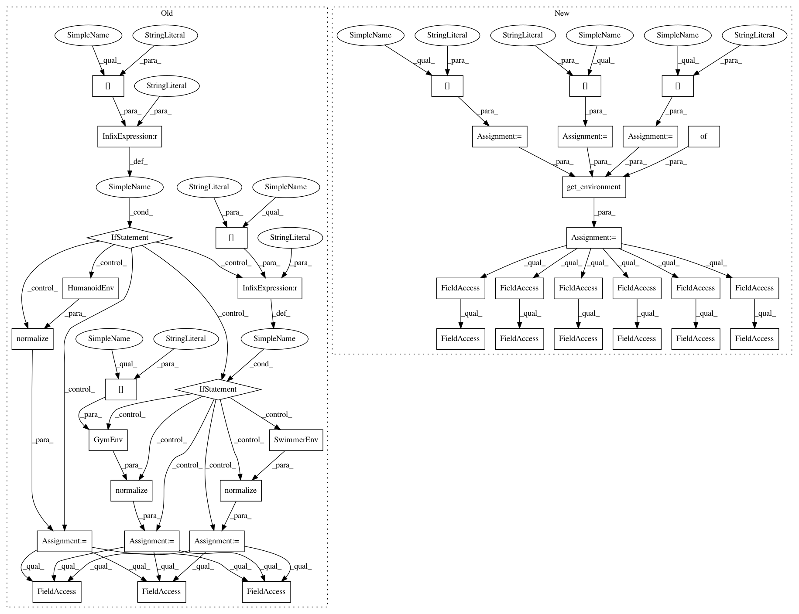

85aea8b77a57afbb8d81a1235382b73bff6552be,examples/mujoco_all_sql_remote.py,,run_experiment,#Any#,103
Before Change
def run_experiment(variant):
if variant["env_name"] == "humanoid-rllab":
env = normalize(HumanoidEnv())
elif variant["env_name"] == "swimmer-rllab":
env = normalize(SwimmerEnv())
else:
env = normalize(GymEnv(variant["env_name"]))
env = DelayedEnv(env, delay=0.01)
pool = SimpleReplayPool(
env_spec=env.spec, max_size=variant["max_pool_size"])
sampler = RemoteSampler(
max_path_length=variant["max_path_length"],
min_pool_size=variant["max_path_length"],
batch_size=variant["batch_size"])
base_kwargs = dict(
epoch_length=variant["epoch_length"],
n_epochs=variant["n_epochs"],
n_train_repeat=variant["n_train_repeat"],
eval_render=False,
eval_n_episodes=1,
sampler=sampler)
M = variant["layer_size"]
qf = NNQFunction(env_spec=env.spec, hidden_layer_sizes=(M, M))
policy = StochasticNNPolicy(env_spec=env.spec, hidden_layer_sizes=(M, M))
algorithm = SQL(
base_kwargs=base_kwargs,
After Change
def run_experiment(variant):
universe = variant["universe"]
assert universe in ["rllab", "gym"], universe
task = variant["task"]
domain = variant["domain"]
env = get_environment(universe, domain, task, env_params={})
env = DelayedEnv(env, delay=0.01)
pool = SimpleReplayPool(
observation_shape=env.observation_space.shape,
action_shape=env.action_space.shape,
max_size=variant["max_pool_size"])
sampler = RemoteSampler(
max_path_length=variant["max_path_length"],
min_pool_size=variant["max_path_length"],
batch_size=variant["batch_size"])
base_kwargs = dict(
epoch_length=variant["epoch_length"],
n_epochs=variant["n_epochs"],
n_train_repeat=variant["n_train_repeat"],
eval_render=False,
eval_n_episodes=1,
sampler=sampler)
M = variant["layer_size"]
qf = NNQFunction(
observation_shape=env.observation_space.shape,
action_shape=env.action_space.shape,
hidden_layer_sizes=(M, M))
policy = StochasticNNPolicy(
observation_shape=env.observation_space.shape,
action_shape=env.action_space.shape,
hidden_layer_sizes=(M, M))
algorithm = SQL(
In pattern: SUPERPATTERN
Frequency: 3
Non-data size: 40
Instances
Project Name: rail-berkeley/softlearning
Commit Name: 85aea8b77a57afbb8d81a1235382b73bff6552be
Time: 2018-07-27
Author: kristian.hartikainen@gmail.com
File Name: examples/mujoco_all_sql_remote.py
Class Name:
Method Name: run_experiment
Project Name: rail-berkeley/softlearning
Commit Name: 85aea8b77a57afbb8d81a1235382b73bff6552be
Time: 2018-07-27
Author: kristian.hartikainen@gmail.com
File Name: examples/mujoco_all_sac_remote.py
Class Name:
Method Name: run_experiment
Project Name: rail-berkeley/softlearning
Commit Name: 85aea8b77a57afbb8d81a1235382b73bff6552be
Time: 2018-07-27
Author: kristian.hartikainen@gmail.com
File Name: examples/mujoco_all_sql.py
Class Name:
Method Name: run_experiment
Project Name: rail-berkeley/softlearning
Commit Name: 85aea8b77a57afbb8d81a1235382b73bff6552be
Time: 2018-07-27
Author: kristian.hartikainen@gmail.com
File Name: examples/mujoco_all_sql_remote.py
Class Name:
Method Name: run_experiment